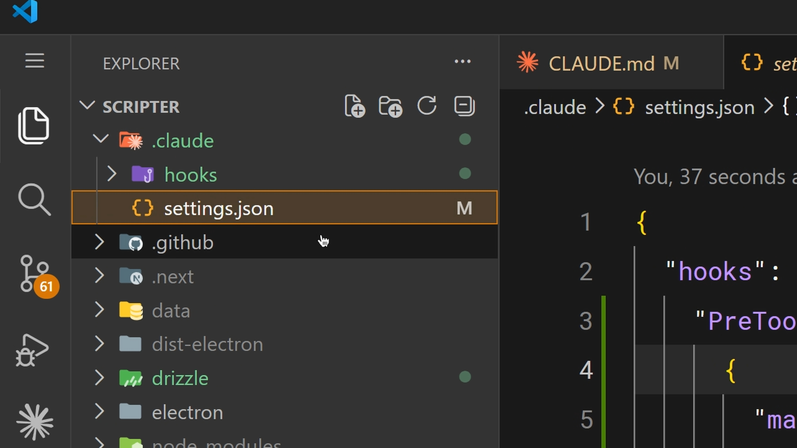

お願いではなく、保証
フックは、Claude Code のライフサイクルの様々な地点でコマンドを実行させる仕組み。そして、ここまで扱ってきたすべてとの違いが一点で語られる。
フックと他のすべての違いは、フックが決定論的であること。必ず走る。
— 公式解説 / 00:10
対比として出されるのが CLAUDE.md だ。そこに「ファイル編集のたびに Prettier を実行して」と書くことはできる。そしてほとんどの場合そうしてくれる。でも、時々しない。完璧ではない。フックはそれを、例外なく毎回にする。
CLAUDE.md・スキル・プロンプトはすべてモデルの判断を経由する。フックだけがそれを経由しない。「確率的にやってほしいこと」と「必ず起きてほしいこと」を書き分けるための道具だと捉えると、使いどころが決まる。
一般的な使用例
ファイル編集後の自動フォーマット
もっとも定番。編集のたびにフォーマッタを走らせる。
実行されたすべてのコマンドをログに記録する
コンプライアンス目的。何が実行されたかの記録を残す。
危険な操作をブロックする
本番ファイルの変更など、起こってはいけないことを止める。
タスク完了時に自分に通知を送る
Claude が作業を終えたら知らせる。
3つを決めるだけ
フックは settings.json で設定する。決めることは3つ。
イベントを選ぶ
ライフサイクルのどこで走らせるか。
マッチャーを設定する（任意）
どのツールに適用するか。
実行するコマンドを指定する
実際に走らせるもの。
これらはフックできるイベントのほんの一部で、Claude Code はさらに多くをサポートしている。設定は Claude Code 内の /hooks コマンドからでも、settings.json を直接編集してでも行える。

.claude/ に hooks/ ディレクトリと settings.json が同居している。実践例：編集後の自動整形
もっとも一般的なフック。PostToolUse フックに "Edit|MultiEdit|Write" というマッチャーを設定すると、Claude がファイルを変更するたびに発火する。
コマンド側はファイル拡張子を確認して、適切なフォーマッターを走らせる。
- TypeScript → Prettier
- Go → gofmt
- Python → Ruff
- そのプロジェクトが使っているもの
PreToolUse でブロックする
PreToolUse フックは、実行前にツール呼び出しをブロックできる。フックはツール名と入力を JSON 形式で標準入力から受け取る。そして、動作を決めるのは終了コードだ。
終了コード2の設計が上手いところで、単に止めるだけでなく、なぜ止められたのかが Claude に伝わる。だから Claude は別の手段を取り直せる。

PreToolUse で Bash をマッチさせ、$CLAUDE_PROJECT_DIR/.claude/hooks/block-dangerous-commands.sh を実行している。下に PostToolUse の Edit|Write が続く。これが厳格なルールを強制する方法。例として挙がるのは3つ。
- 本番設定ディレクトリへの書き込みをブロック
- rm -rf を含む bash コマンドをブロック
- main へのコミットをブロック
チームにとって「提案」ではなく「保証」が必要なものなら、何でも。（whatever your team needs to be guaranteed, not suggested）
チームと共有する
.claude/settings.json で設定されたフックはプロジェクトレベルで、リポジトリにチェックインできる。これでチーム全体が自動的に同じフックを得る。
ひとつ実務的な注意がある。コマンド内では CLAUDE_PROJECT_DIR 環境変数を使ってプロジェクトに保存されたスクリプトを参照する——そうすれば、Claude の現在の作業ディレクトリがどこであっても動く。
まとめ
フックは Claude Code の動作に対する決定論的な制御を提供する。
- 自動整形とログ記録 → PostToolUse
- 危険な操作のブロック → PreToolUse
- 設定は /hooks か settings.json
- リポジトリにチェックインして共有
何かが毎回必ず実行される必要があるなら、プロンプトに書くのではなく、フックに入れる。
原文トランスクリプト（英語・全文）
YouTube の自動生成字幕から取得したもの。Go format（gofmt）、Claude project dir（CLAUDE_PROJECT_DIR）などは音声どおりの表記。
Hooks let you run commands at different points in Claude code's life cycle. The key difference between hooks and everything else we covered is that hooks are deterministic. They always run. So, put it this way. You can tell Claude
in your claude.md file to run prettier after every file edit and most of the time it will do that, but sometimes it won't. It's not perfect. But a hook makes it happen every single time with no exceptions.
Common use cases could include auto formatting after file edits, logging all executed commands for compliance, blocking dangerous operations like modifying production files, and sending yourself notifications when Claude
finishes a task. Hooks are configured in your settings.json file. You pick an event, optionally set a matcher for which tool it applies to, and provide a command to run. User prompt submit runs when you submit
a prompt before Claude processes it. Pre-tool use which runs before a tool call. Post-tool use runs after a tool call completes. Notification runs when Claude sends a notification, and stop runs when Claude
finishes responding. The most common hook. Auto formatting after edits. You set a post-tool use hook with a matcher of edit or multi-edit, right? So, it fires whenever Claude modifies a file. The command checks the file
extension and runs the appropriate formatter. This could be prettier for TypeScript, Go format for Go, Ruff for Python, whatever your project uses. Pre-tool use hooks can block tool calls before they execute. So, your hook
receives a tool name and input as JSON on stdin. If it exits with code two, the action is blocked and the stderr message gets fed back to Claude as feedback so Claude knows why it was blocked and can adjust.
Exit code zero means proceed. Exit code two means block. This is how you enforce hard rules. Block writes to a production config directory, block bash commands that contain rm -rf, block commits to main,
whatever your team needs to be guaranteed, not suggested. Hooks configured in .Claude/settings.json are project level and can be checked into your repo. This means that your entire team gets the same hooks
automatically. Use the Claude project dir environment variable in your commands to reference scripts stored in your project so they work regardless of Claude's current working directory. >> [music]
>> Hooks gives you deterministic control over Claude code's behavior. >> [music] >> Use post-tool-use for auto-formatting and logging. Use pre-tool-use to block dangerous operations. Configure them in
the /hooks or in settings.json >> [music] >> and check them into your repository so your team gets them, too. If something needs to happen every time without fail, don't put it in a prompt. Put it in a hook.